Following the broken pieces to a night shore, the poet finds his own heart and then his own two hands lying where he left them, puts each back on with care, and says 'nevermore' until he can say 'Now go.'


The poem
Nevermore is the recovery that follows 03's ruin, built as two 'What if I follow' journeys. In the first he follows the trail of broken pieces to a shore of wildfire ash and sea-floor debris. The waves fold to whispers, the wind mutes the trees, and in that silence he finds 'a throbbing heart left at the midlife corner', familiar and his. He lifts it with care and puts it back in place. 'Nevermore' here is a vow, not a lament.
The turn is 'What if I follow this reclaimed heart', the same sentence with a new guide. In the second journey he follows his heart into a moonlit field where puzzle pieces of faith scatter like mustard seed, golden plants turn to face him, and weeds fall back into the shadows where memory hides. Then the clouds put out the stars and he searches bare ground for his two hands, 'hands that once could touch dusk after dusk'. He puts them back on 'with the care of my future at stake.' The confession 'I've wanted the world and lost my soul' gives way to 'I'll be alright', and the poem ends on two words: nevermore, then Now go.
Look
Moonlight from high frame-left as a single cool key, with the heart as the only warm source until the field turns gold. In 04.5 light comes from a code-drawn circle around his reach and nothing else. Cards: black track-jacket cut from black corrugated board with the red piping as a painted kraft strip, sunglasses as a separate glossy black card, and the ash shore as grey pastel rubbed over kraft. The heart is a small glossy-varnished card that reads wet against the matte world. The hands should show their brass brads and eyelets clearly, so that putting them back on is literally re-seating a joint.
Our best elements
The strongest things we already have for this poem: generated footage, Atlantis views, found film and painted kit sheets.
04.3c/04.4a/04.6d: the vast moonlit night garden field
Figure-free, with pale blooms in the foreground for flower cards to stand among and a starred sky that can be muted for 04.5. The poem's main plate.
04.3b/04.4a: mustard seeds landing, plants blooming golden
Thousands of warm points on a dark plain, already 'scattered as mustard seed' and 'in a golden hue', with no figure.
04.1/04.3a: night shore and the start of the incline (district cenotaph)
Wet stone shore, a lit stair climbing away and a tall dark wall: shore, incline and a vertical surface in one figure-free plate.
04.3a: the trail up the incline toward the field
A red path rising under a single moon, the ascent district by name. Crop out the tiny far figure.
04.2a 'winds will mute the trees' and 04.6d 'still muted tree'
Misty, motionless trees seen through a big dark frame. The frame is a ready vertical pane for an archive insert.

04.1a/b: ravens overhead on the shore of broken pieces
The raven flock and ash-grey shore are exactly right. The walker in it fights the puppet, so crop him out or use the sky only.

04.2a: waves calming to folded whispers
Nearly motionless pewter water with no figure, a ready-made 'right level of silence'.

04.1c chest hollow / 04.2c chest close
An x-ray chest with an empty glowing centre. It can be keyed behind a cut window in the torso card.
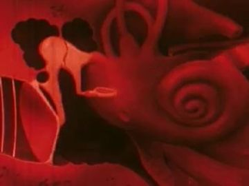
04.2b: the heart in the sand, beating; colour key for the heart card
A red animated anatomical heart, so the archive's own heart answers his find.
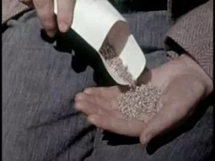
04.3b mustard seeds / 04.6 'hands that once could…'
Hands and seed in one frame. It answers the missing hands and the scattered faith together.
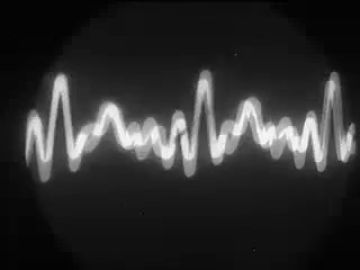
04.2b heartbeat pulse
A bright oscilloscope trace on black, a throbbing line that reads large and clearly inside any pane.
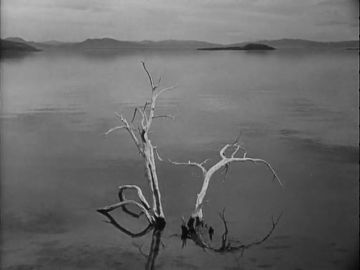
04.1 'debris lifted from the night seawater's floor' / calm
White dead branches standing in glassy water, debris and silence in one composed image.
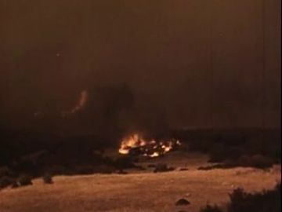
04.1 'ashes of expired wildfires'
Low fire burning out at night on dark ground, the 'expired' wildfire just before the ash.
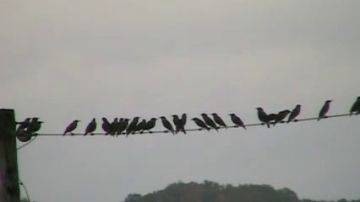
04.1/04.3a ravens
A clean silhouette row of black birds on a pale sky that drops into any pane.
What we need
- A figure-free ash-covered night shore with tambourine pieces and chapel remnants: the shore plates either carry a figure (gen_c77b296bbf, gen_306845943e) or are a stair (view_097).
- The red_black_sunglasses puppet painted at all: pack and action sheet are blank layouts, and the poem's main pose, a walk with hands in pockets, has no cell.
- Torso cards with a cut chest hollow (heartless) and a heart-seated version.
- The detachable hands as props: hand_L and hand_R lying palm-down in grit, dusty, with visible eyelets.
- The heart prop: a small anatomical heart with beat and glow states (generated hearts are neon or held by other figures).
- Turning golden blooms with replacement heads (closed, open-away, open-facing) and recoiling weeds.
- A 'deepest darkness' plate: the field under cloud with only a lit patch of bare ground.
- Archive of hands working soil at dusk and of an anatomical heart being placed; only fragments so far.
Characters
POET kit →
The speaker, alone: walks the shore heartless with his hands hidden, reclaims his heart, follows it into the field, finds his missing hands and puts them back on, then is told to go.
Costume. red_black_sunglasses: black track jacket with red piping running from the shoulders down the chest, black track trousers, black Chelsea boots, black sunglasses as a separate plug-in card. Dust the cuffs and knees with ash grey from the shore and soil brown after 04.5.
Expressions. sad (mouth down, head bowed; eyes hidden by glasses), listening (head tilted, mouth slightly open), recognition (chin lifts), awe (head up, mouth open), strain (jaw set, head low), afraid (mouth open, head back), calm (neutral mouth, chin level)
Hands. in_pocket (sleeve ends tucked into pocket card), missing (sleeve cuff ending in a bare kraft cut, brad hole empty), open (palm out, after re-seating), relaxed (at sides, final stand)
Cards to paint. walk·threequarter and walk·profile with hands in pockets (4 leg positions); torso front with chest hollow cut-out + heart-seated torso; forearms: pocket-tab, missing-cuff, normal wrist; sunglasses card (front, threequarter, profile); heads: sad, listening, recognition, awe, strain, afraid, calm, down; kneel·threequarter, kneel·profile, crouch·front, crouch·profile, rise in-betweens; hand_L/hand_R as dusty props + open/relaxed seated versions
poet.04.action gets the climax right: kneel·threequarter, kneel·profile, crouch·threequarter/profile/front and kneel·front with in_pocket, missing and open hands. It lacks the walk with hands in pockets (04.1, 04.3, 04.4), the chest-hollow stand (04.1c), the rise to stand (04.6c) and the final relaxed stand. Its prop row is empty when heart, hand_L and hand_R should be listed. The WHO head has no sunglasses, so add the plug-in glasses card per the pack note.
Its action sheet for this poem is on Character Kits v2.
open the action sheet →| action | beats | how the card does it |
|---|---|---|
| walk, hands in pockets | shoulders lift → walk cycle with arms locked → head lowers to read the trail → stops | upper arms fixed to torso card, forearm cards ending in pocket tabs; only the legs cycle; head swaps sad-front → down |
| heart returns | kneels, listening → heart card rises from sand → floats to chest → seats in hollow, glow → he straightens (recognition) | kneel replacement body; heart card on a code path into the cut chest window; swap the torso to the heart-seated version; head down → profile-up |
| the empty sleeves | crouched, strain → pulls arms from pockets → sleeves end in nothing → hold on the empty wrists (afraid) | crouch·front replacement; forearm cards swap pocket-tab → missing-cuff; head afraid replacement |
| put the hands back on | kneel over hands → lowers left wrist → hand_L seats on brad (click) → same for right → fingers flex → rises | hand_L/hand_R prop cards are pinned to the wrist brads on camera; swap each palm-down → open; then rise from kneel to stand via three in-between bodies |
Props
Sorted by priority. Each has its design, how to build it, the references found in the archive and our footage, and a prompt for its card sheet.
golden-hued flowers on tall stems that turn to face him
15 cm heads on 60 cm stems, mustard and cream petals. States: closed bud, open facing away, open three-quarter, open facing camera
References found
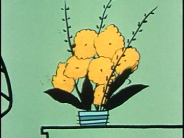
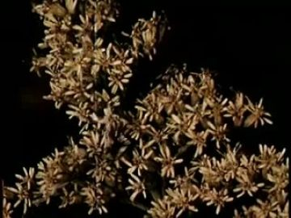
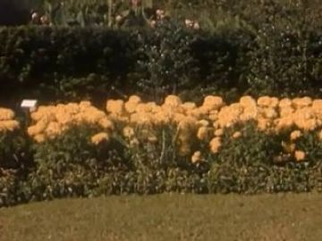
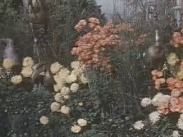

Generation prompt
Prop card sheet: tall-stemmed golden flowers as flat corrugated-cardboard cards, mustard and cream gouache petals with confident ink line, raw kraft cut edge, brass brads where the head joins the stem, flat-on even light, plain background. Separate cards: 1) closed bud; 2) open, facing away (back of the flower); 3) open, three-quarter; 4) open, facing front; 5) a bare stem.
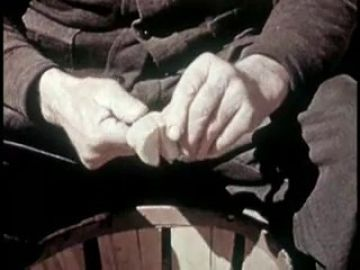
the poet's left hand as a separate detachable piece
19 cm wrist to fingertip, dark brown skin, ash-dusty, a brass eyelet at the wrist. States: palm-down in grit, lifted, seated and open
References found
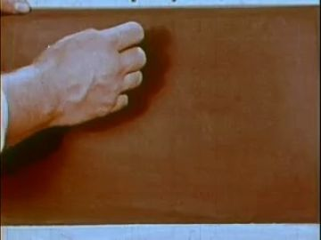
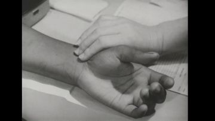
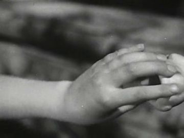


Generation prompt
Prop card sheet: a man's left hand with dark brown skin, cut off cleanly at the wrist with a brass eyelet, as flat corrugated-cardboard cards, gouache with confident ink line, raw kraft cut edge, flat-on even light, plain background. Separate cards: 1) palm-down dusted with grey grit; 2) palm-down clean; 3) open palm-up; 4) relaxed curl.
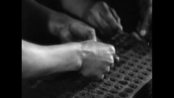
the poet's right hand as a separate detachable piece
mirror of hand_L, 19 cm, brass eyelet. States: palm-down in grit, seated and flexing
References found

Generation prompt
Prop card sheet: a man's right hand with dark brown skin, cut off cleanly at the wrist with a brass eyelet, as flat corrugated-cardboard cards, gouache with confident ink line, raw kraft cut edge, flat-on even light, plain background. Separate cards: 1) palm-down dusted with grey grit; 2) fingers flexing; 3) open palm-up; 4) relaxed curl.
the poet's own heart, anatomical, deep red, beating, faint inner glow
12 cm, gloss-varnished red gouache, brass brad on the back to seat in the chest window. States: half-buried in sand (gritty), clean beating (two pulse sizes), glowing, seated
References found
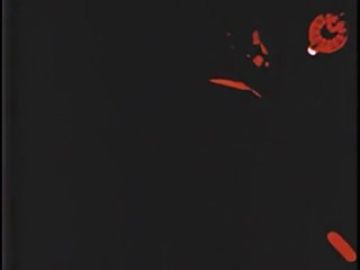
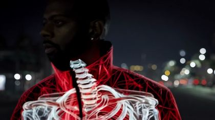

Generation prompt
Prop card sheet: an anatomical human heart, deep red with blue-violet vessels, as flat corrugated-cardboard cards, gouache with confident ink line and gloss varnish, raw kraft cut edge, a brass brad on the back where it seats, flat-on even light, plain background. Separate cards: 1) half-buried in grey sand; 2) clean, resting size; 3) clean, swollen beat size; 4) with a soft inner glow halo card.
black sunglasses as their own plug-in card
14 cm wide, glossy black lens with a single white highlight. States: front, threequarter, profile
Generation prompt
Prop card sheet: black sunglasses as flat corrugated-cardboard cards, glossy black gouache lenses with one white highlight, confident ink line, raw kraft cut edge, a brass brad at the bridge, flat-on even light, plain background. Separate cards: 1) front; 2) three-quarter; 3) profile.
handcrafted wooden puzzle pieces of faith, gilded edges
4 cm each, pale wood with gold-leaf edge. States: locked together as a disc, scrambled, scattering
References found

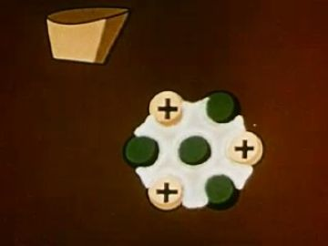
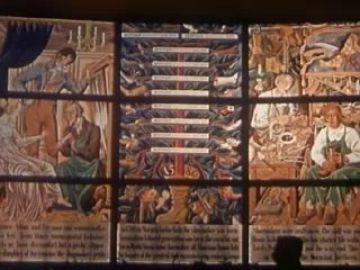
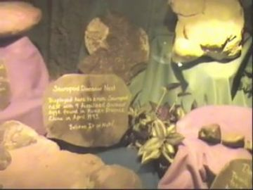


Generation prompt
Prop card sheet: handcrafted wooden jigsaw puzzle pieces with gilded edges as flat corrugated-cardboard cards, gouache with confident ink line and gold leaf, raw kraft cut edge, flat-on even light, plain background. Separate cards: 1) nine pieces locked into a round disc; 2) the same pieces scrambled apart; 3) single pieces tumbling.
black ravens, 3-5, flying
60 cm wingspan, matte black card with a blue-grey edge line. States: wings up, wings level, wings down, gliding
References found
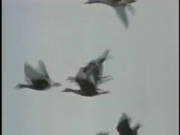
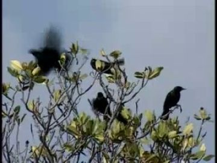
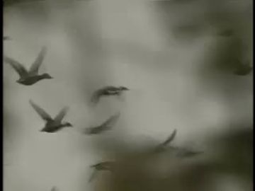
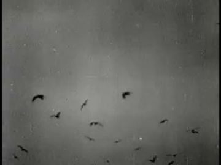


Generation prompt
Prop card sheet: a black raven in flight as flat corrugated-cardboard cards, matte black gouache with a thin blue-grey ink edge, raw kraft cut edge, brass brads at the wing roots, flat-on even light, plain background. Separate cards: 1) wings up; 2) wings level; 3) wings down; 4) gliding profile.

the shattered tambourine from 03, now on the night shore
same cards as 03 (rim arcs, skin shards, jingles), recoloured cold and ash-dusted. States: strung along waterline, half-buried rim
References found
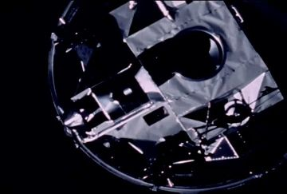


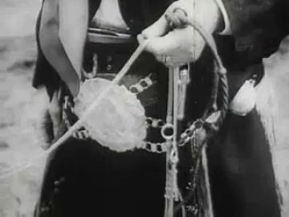
Generation prompt
Prop card sheet: pieces of a shattered wooden tambourine on a night beach as flat corrugated-cardboard cards, gouache with confident ink line, raw kraft cut edges, flat-on even light, plain background. Separate cards: 1) split rim arcs dusted with grey ash; 2) torn skin shards, wet; 3) loose brass jingles; 4) a rim half-buried in sand.
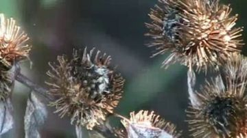
dark spiky weeds that recoil into shadow
40 cm, black-green with burr heads. States: upright, recoiling, collapsed
References found
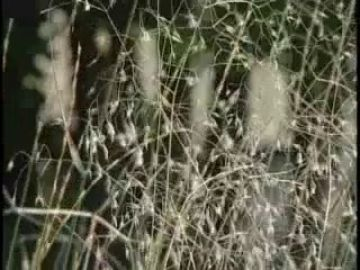
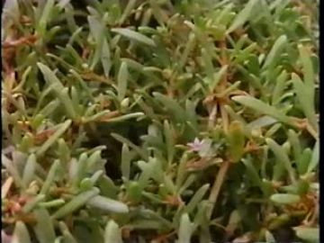
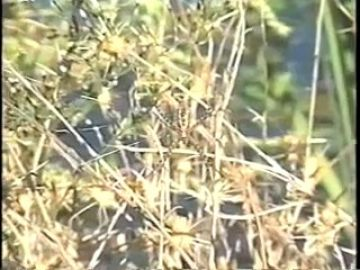

Generation prompt
Prop card sheet: dark spiky weeds with burr heads as flat corrugated-cardboard cards, black-green gouache with confident ink line, raw kraft cut edge, brass brads at the base, flat-on even light, plain background. Separate cards: 1) upright; 2) bent back, recoiling; 3) collapsed flat.

pew ends, lead tracery, stones from 03, ashed over
reuse 03 cards with a grey ash overlay. States: half-buried in ash
References found


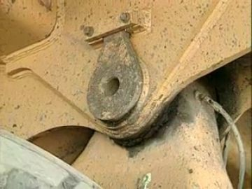

Generation prompt
Prop card sheet: chapel wreckage half-buried in grey ash as flat corrugated-cardboard cards, gouache with confident ink line, raw kraft cut edge, flat-on even light, plain background. Separate cards: 1) pew end; 2) lead tracery fragment; 3) stones; 4) a small cross, each with an ash drift over the lower half.
tiny golden-brown mustard seeds, scattered
0.2 cm: too small for cards; code particles sampled from a painted seed swatch. States: in a cupped hand, falling, settled
References found
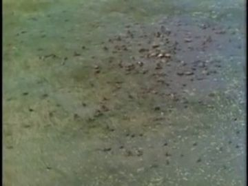
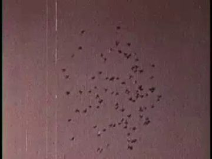
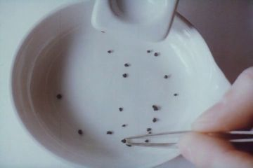
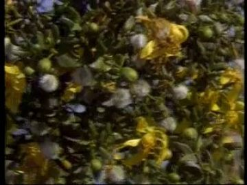
Generation prompt
Prop card sheet: a swatch of golden-brown mustard seeds painted in gouache on corrugated cardboard, confident ink dots, raw kraft cut edge, flat-on even light, plain background. Separate cards: 1) a heap of seeds; 2) a loose scatter; 3) single seeds at three sizes for particles.
weed-wrapped wood, rope, shells lifted from the sea floor
20-80 cm, black-green weed on bleached wood. States: floating, washed up
References found
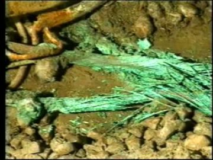
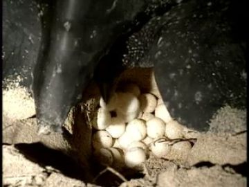
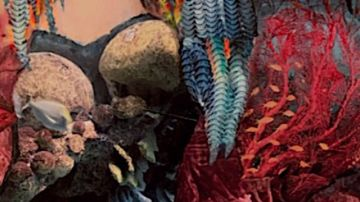
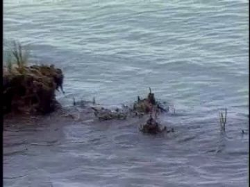

Generation prompt
Prop card sheet: sea debris as flat corrugated-cardboard cards, gouache with confident ink line, raw kraft cut edge, flat-on even light, plain background. Separate cards: 1) a bleached driftwood branch wrapped in black-green weed; 2) a coil of rope; 3) three shells; 4) the same washed up on sand.
Places
shore_night
A night shore under ash: grey sand, still water, the tambourine pieces from 03 strung along the waterline, ravens above. Quiet and cold.
Where the archive opens: the tall stone wall of view_097 (vertical, best); the stair-lamp landing in view_097; the bright moon-path on the water (only if the film is bright)
References: our footage, Atlantis views, found film
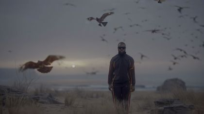


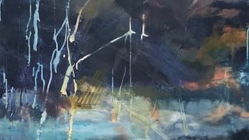
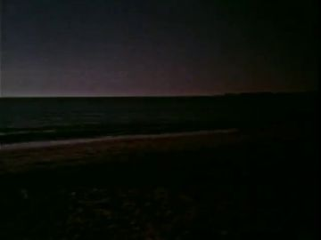
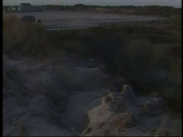
Generation prompt
Wide night shore, no people, flat grey sand dusted with pale wildfire ash, charred stumps, driftwood and weed lifted from the sea, broken chapel stones and a shattered tambourine along the waterline, the sea calm as glass, one moon, cold light, photoreal.
incline_trail
The trail up from the shore: steps and then a red earth path rising toward the field under one moon.
Where the archive opens: the stone wall alongside the steps (view_097); the moonlit sea seen back down the slope (weak; keep it large and bright)
References: our footage, Atlantis views, found film


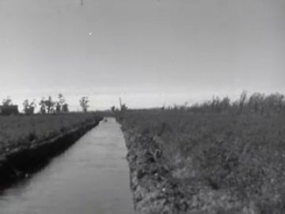
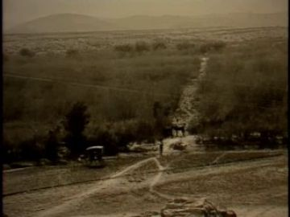
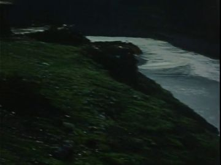

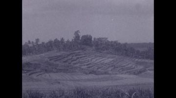
night_garden_field
A vast moonlit garden field: pale blooms under the Milky Way that turn gold as he passes, weeds at the row-ends, muted trees on the edge.
Where the archive opens: the window-framed still trees of gen_366225426b cut in as a standing frame at the field edge; a large patch of sky above the horizon
References: our footage, Atlantis views, found film


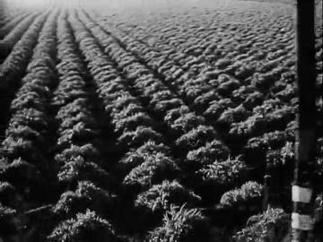
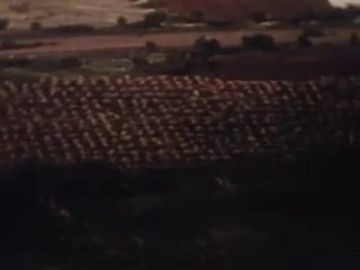
field_dark
The same field with the stars muted: the darkest frame in the film, only a circle of bare ground within his reach is lit, and his hands lie at its edge.
Where the archive opens: none: let the light circle be the only surface; the archive enters only as sound or on the soil itself
References: our footage, Atlantis views, found film


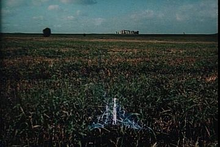
Generation prompt
The same flower field at night under heavy cloud, stars almost gone, nearly black, a single soft circle of light on bare furrowed soil in the foreground, no people, photoreal, locked camera.
Effects
| effect | how, in this cut-out world |
|---|---|
| chest_hollow | Cut a heart-shaped window in the torso card and key gen_d877af5eab or plain night sky behind it, so the world shows through him. |
| heart_float | Code path: the heart card rises from the sand on a slow ease, with a 2% scale pulse at the poem's own spoken rhythm, then snaps into the chest brad with one frame of glow. |
| heartbeat_pulse | Alternate the resting and swollen heart cards; at the same time a thin red oscilloscope trace (Sound Waves and Their Sources, 1933) pulses in a pane. |
| calm_waves | Slow the water plate to a near-stop and lay three paper wave-lines that flatten one by one. |
| still_trees | Hold a frame of Wind in Trees 8 (2007) or gen_366225426b as a freeze, with the wind sound dropped out on the same frame. |
| golden_bloom | Swap each bloom card closed → open-away → open-facing in a ripple that follows his walk. |
| shadow_swallow | Weed cards bend back on their base brads and a soft black gradient slides over them. |
| seed_scatter | Code particles sampled from the painted seed swatch, falling under gravity with a little gold glint. |
| darkness_ramp | Stars masked out one by one by sliding cloud cards, then the exposure crushed until only the reach-of-touch circle remains. |
| reach_of_touch_pool | A code-drawn soft circle of moonlight centred on his torso brad that tracks him, and widens when the hands are restored. |
| ravens_overhead | Three to five raven cards on looping paths with a 4-card wing cycle; for wide shots cut in Blackbirds on a Wire (2007). |
The puppet passage
his line · 04_L11
“What if I follow this reclaimed heart to where the puzzle pieces of faith are handcrafted”
the archive answers · The Snow Queen (Animation) (1959)
“And follow your heart to where it needs you.”
a head that lowers · water: the moonlit night sea below the incline, a bright patch of it seen past his shoulder
Keep. The lowered head is right for 'What if I follow this reclaimed heart': his hands are still gone and his eyes are behind glasses, so only the head can carry it. The Snow Queen (1959) answers 'follow your heart to where it needs you' so literally that it feels like an instruction, and it sets up 'Now go'.
Better. Don't open the archive in the night sea patch, since water reads faint. Stage it on view_097: POET on the lit stairs with the tall stone wall beside him, and the Snow Queen opening on the wall face as a large vertical pane. Put a faint warm glow in the chest hollow card under his lowered chin so the head-down reads as looking at the heart. Swap to a 'down' replacement head, not a rotation.
Other lines that could carry one:
- 04_L09 'and it used to be mine. I'll lift it with care': no hands, so head lowers and the heart rises; The Unique Contribution (1959) red heart opens in the stone wall of view_097.
- 04_L13 'The plants in a golden hue bloom and face toward me': head lifts (awe) in gen_ca6878be91; Accidents Don't Just Happen's yellow flowers open in the window frame of gen_366225426b at the field's edge.
- 04_L17 'to search the bare ground for two hands': empty sleeves held out, wrists bare; Victory Gardens hands with seed open on the lit soil circle (bright, large).
- 04_L19 'and they too used to be mine': hand held out, the newly seated hand_L turned palm-up; Victory Gardens hands (arch_ea553edf-9921) in the gen_366225426b frame.
- 04_L25 'in this still muted tree in night garden': hands relaxed, head level; Wind in Trees 8 (2007), frozen, opens inside the gen_366225426b frame.
Scene ideas
- Heart and line: The Unique Contribution's red heart (1959) and the Sound Waves and Their Sources (1933) trace intercut as the heart card beats in the sand. When it seats in his chest the trace steadies.
- Seeds into hands: Victory Gardens' seed pouring into a palm plays on the lit soil circle just before the hand cards are found, so the archive hands lead the puppet to his own.
- Ash and fire: Watershed wildfire (1958) burning low in the stone wall of view_097 while ash particles drift over POET walking with hands in pockets. The fire is expired by the time he passes.
- Debris from the floor: The Photographer (1948) white driftwood in still water as the far layer, with sea_debris cards washed up in front and 03's tambourine pieces strung along the line.
- Turning field: in gen_ca6878be91 a row of golden_bloom cards flips to face him one by one as he walks; the gen_bad0cf8d7a gold points fade up in the background.
- Deepest dark: cloud cards slide over gen_ca6878be91's Milky Way until black, then cut to Long Distance (1941)'s near-black frame and back to the single lit circle with two hands in it.
- Ravens on the climb: Blackbirds on a Wire (2007) as the opening of 04.3a, then the birds lift off the wire and become raven cards flying up the view_071 path ahead of him.
- Now go: final still in gen_366225426b, with POET seen small and from behind in the frame's foreground, hands at his sides. On 'Now go' he takes one step and the next poem opens.
References to look for
| what | where to look |
|---|---|
| Anatomical hearts and heartbeats in educational film | archive: 'heart circulation animation', 'electrocardiograph', 'stethoscope', 1940s-60s health films (Unique Contribution, Hemo the Magnificent) |
| Hands working soil at dusk | archive: 'victory garden', 'planting seeds', 'farm hands', 'sowing', home movies of gardens; Walker Evans and Dorothea Lange hand close-ups |
| Night shore, ash and driftwood | archive: 'wildfire aftermath', 'beach debris', 'driftwood', National Wildlife Refuge films; Hiroshi Sugimoto seascapes for flat calm |
| Detachable puppet hands and replacement parts | Lotte Reiniger, Yuri Norstein 'Tale of Tales', Michel Ocelot silhouette films, Kara Walker cut-paper |
| Fields that turn toward a figure | Van Gogh 'Sunflowers' and wheatfield paintings; Kerry James Marshall garden paintings; 'sunflower heliotropism time lapse' archive |
| Ravens and black birds | archive: 'blackbirds', 'crows flock', 'starlings murmuration'; Masahisa Fukase 'The Solitude of Ravens' |
Our footage for this poem
The 20 generated clips and 8 Atlantis views closest to the poem (CLIP, image against its treatment and lines).


The kit
| status | kind | item | source |
|---|---|---|---|
| need | body | walk with hands in pockets (threequarter, profile) | add to poet.04.action, to paint |
| need | body | torso with chest hollow + heart-seated torso | to paint |
| need | body | forearms: pocket-tab, missing-cuff | to paint |
| need | fx | reach-of-touch light circle, darkness ramp, seed particles | code |
| need | hand | hand_L / hand_R detachable props + open/relaxed | to generate; poet.red_black_sunglasses.hands layout |
| need | head | sunglasses plug-in card | to generate |
| need | prop | heart (buried, beat x2, glow) | to generate; colour ref arch_34ba769e-5a7e |
| need | prop | golden blooms (4 turn states) + weeds | to generate |
| need | prop | ravens (4 wing cards) | to generate |
| need | prop | puzzle pieces, mustard seed swatch, sea debris | to generate |
| need | prop | tambourine pieces + chapel remnants (from 03, ashed) | shared with 03 |
| need | set | ash night shore plate, figure-free | to generate |
| need | sound | wind dropping out, wave hush, brad 'click' as hands seat, a single heartbeat | to record |
| partial | body | POET red_black_sunglasses body front/threequarter/profile/back | existing pack poet.red_black_sunglasses.body.* (layouts only), to paint |
| partial | body | kneel/crouch replacement bodies (5) | poet.04.action cells + poet.red_black_sunglasses.replacements (layouts), to paint |
| partial | head | heads: sad, listening, recognition, awe, strain, afraid, calm, down | poet.red_black_sunglasses.heads (blank plates); expression style refs exist |
| partial | set | dark field with reach circle | gen_ca6878be91 darkened in code |
| have | fx | heartbeat trace | Sound Waves and Their Sources (1933) arch_24943954-e967 |
| have | set | night garden field plate | gen_ca6878be91 + gen_bad0cf8d7a |
| have | set | incline plate | view_071 (crop figure) + view_097 |